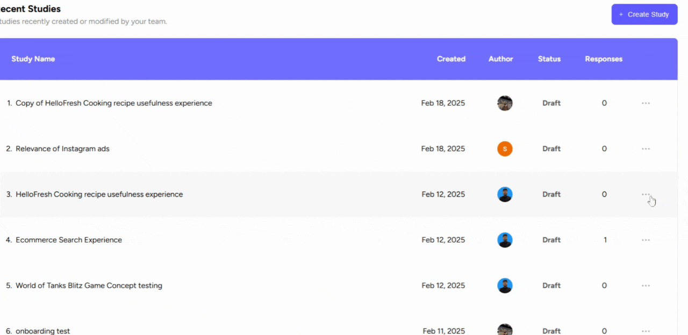

Duplicating a study can be beneficial when you want to create a similar study without having to start from scratch. This process duplicates all the associated data with the study, except for the response data.
How to Duplicate a Study
1. Log into your Userology account and access the dashboard. 2. Locate the study you wish to duplicate. 3. Click the three dots next to the study and select 'Duplicate Study.' 4. A new copy will be created, excluding response data. 5. Review and adjust the new study as needed.

Note
1) Remember, duplicating a study is a great way to save time when creating similar studies. However, always make sure to review and adjust the duplicated study as necessary to ensure it meets your specific needs.
2) After duplicating a study, always preview it to ensure all the necessary data has been copied correctly. Remember, response data will not be duplicated.
If you need further help, please email us at support@userology.co